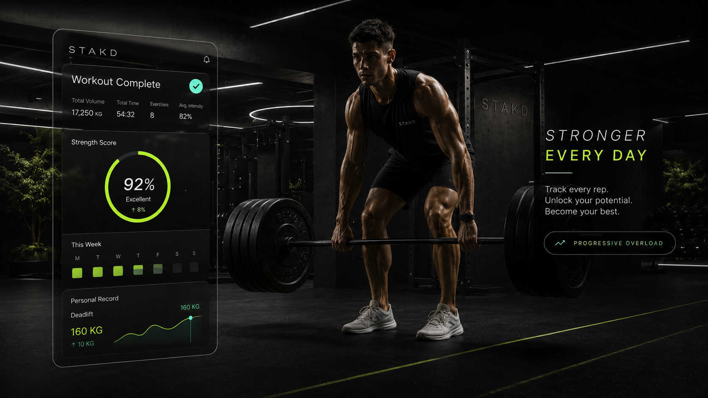
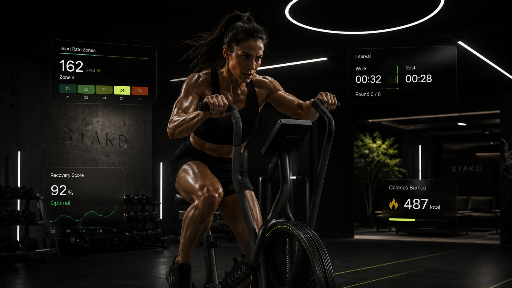
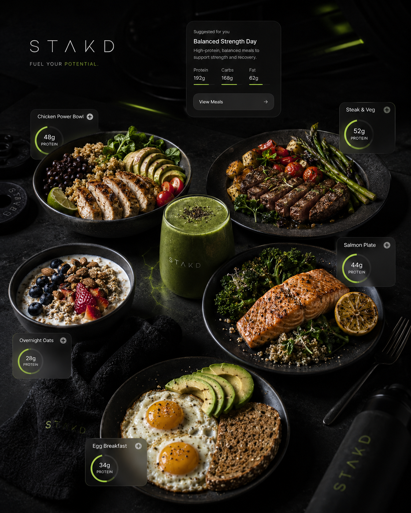
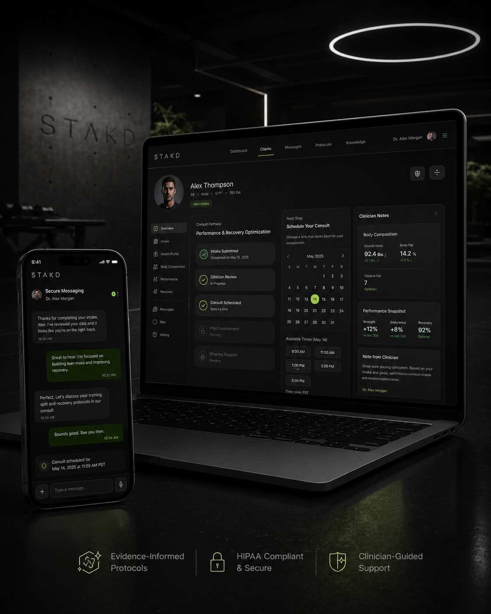

Strength
Stronger every day.
Track reps, volume, and PRs with a premium performance system.
A cinematic fitness hub for workouts, activity plans, nutrition, recovery analytics, and guided performance support.

Choose the path that fits your body, schedule, and ambition. The experience should feel like a premium app from the first click.
Four training days, two movement or cardio days, and one focused recovery day. Built for body composition without losing output.
Strength, muscle, fat loss, mobility, longevity, and athletic tracks — organized with the same premium app feel as the ad creatives.
Every program feels structured, polished, and easy to start. No generic blocks. No cheap cards.

Performance visuals carry the site: effort, recovery, heart-rate zones, progressive overload, and readiness all work together.



Nutrition should look premium, appetite-driven, and performance-focused — not like a generic meal blog.

High-protein meals, clean macro direction, recovery snacks, and a polished visual experience that supports conversion.
Calories, protein, carbs, fats, and meal suggestions appear as a premium app experience.

Position performance and recovery support professionally: intake, review, scheduling, and ongoing guidance.
Users can request support for performance, recovery, body composition, and related goals. Any next step depends on provider review and applicable requirements.

Capture serious buyers with a polished intake flow for training, nutrition, recovery, and consult interest.
A premium fitness and performance hub for workouts, activity plans, nutrition, recovery analytics, and guided support.
No. The tracks can support beginners, fat loss, muscle building, strength, athletic performance, mobility, and longevity goals.
No. The site is positioned around structured training, nutrition, recovery, and consult requests.